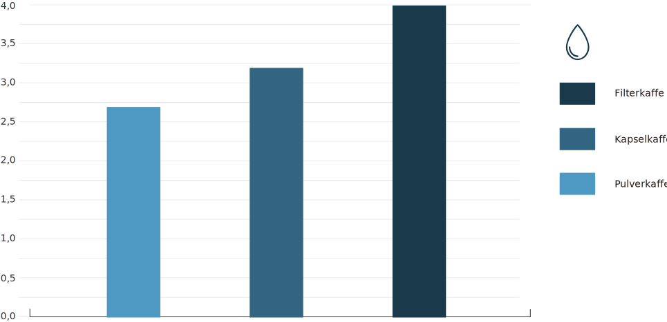

Er kapselkaffe en miljøbombe?
En miljømyte står for fall: Alternativene kan være verre.
Av Knut-Erik Helle
04-11-2015
Kaffe er verdens viktigste handselsvare etter olje, og nordmenn er
blant verdens mest kaffedrikkende folk. I løpet av et år heller vi
nedpå til sammen fire milliarder kopper.
De siste årene har kapselkaffe, som Nespresso, Dolce Gusto og
Tassimo, tatt stadig større markedsandeler. Er det en miljøskadelig
trend? Et aluminiums- eller plastbeger per kopp kaffe blir mye
søppel. Hvis du er en gjennomsnittlig kaffedrikker som sverger til
kapselkaffe, bruker du 1200 kapsler i året.
Men miljøbelastningen fra kaffe kommer ikke bare fra emballasjen. Energi- og vannforbruk ved dyrking, gjødsling, foredling, og ikke minst bruksfasen, kan ha mer å si. Noen ganger kan emballasje i engangsdoser gjøre at vi bruker mindre av det som er inni emballasjen. I sum kan det gi en miljøgevinst.
En omfattende livssyklusanalyse fra 2009 forsøker å svare på spørsmålet om hvilken kaffetilberedning som er best for miljøet. Den sammenligner kapselkaffe (som Nespresso), vanlig filterkaffe og pulverkaffe. Studien så på hele verdikjeden for kaffe, fra åker til søppelhåndtering – inkludert oppvask.
Filterkaffe krever dobbelt så mange kaffebønner som Nespresso
For kapselkaffen utgjør emballasjen en betydelig andel av
miljøbelastningen. Det veies opp av at det trengs langt mindre kaffe
for å tilberede en kopp kapselkaffe enn en kopp filterkaffe –
faktisk ikke mer enn halvparten. Men det er pulverkaffen som kommer
best ut av sammenligningen.
Vekten som oppgis i tabellen under er bønnenes råvekt. Tørkede
kaffebønner veier langt mindre.
Forbruk av rå kaffebønner per kopp kaffe
Det går med nesten 4 ganger flere kaffebønner per kopp filterkaffe enn per kopp pulverkaffe. (NB: Sjekk oppdatering under).

Det trengs 4 liter vann til én kopp kaffe
Mindre kaffeforbruk per kopp gjenspeiles i vannforbruket. Det trengs omtrent 4 liter vann – dyrkingssfasen inkludert – for å fremstille en kopp filterkaffe. For kapsel- og pulverkaffe trengs det henholdsvis 3,2 og 2,7 liter. En tredel av vannforbruket skjer dyrkings- og foredlingsfasen, mens en tredel skjer hjemme hos deg, i form av vann til kaffen og koppevask. For kapselkaffen er fremstilling av emballasje også en ganske stor forbruker av vann.
Vannforbruk for å fremstille en kopp kaffe
Forbruk til kunstig vanning på kaffeplantasjene, og vannforbruk til kraftproduksjon, er holdt utenfor. (NB: Sjekk oppdatering under)
Klimagassutslippene lavest for pulverkaffe
Klimagassutslippet følger grovt sett energiforbruket, som grovt sett følger mengden kaffe som trengs for å brygge en kopp. Også her kommer pulverkaffen best ut, fulgt av kapselkaffe og filterkaffe. Selve kapslene trekker imidlertid klimagassutslippene per kopp en del opp, omtrent til samme nivå som filterkaffe.
Utslipp i CO2-ekvivalenter (alle klimagasser omregnet til CO2)
per kopp kaffe (1 dl)
(NB: Sjekk oppdatering under)
Hva med fairtrade?
En ulempe med å kjøpe en kapselmaskin er at man binder seg til noen få kaffeprodusenter, og at det kan være vanskelig å finne fairtrade-sertifiserte alternativer. For Tassimo og Dolce Gusto har vi ikke funnet noen alternativer, men for Nespresso fins det minst to.
- Friends Fair Trade selger Nespresso-kompatibel fairtrade-kaffe fra Ethical Coffee. Amazon selger Nespresso-kompatible kapsler fra Café Direct. Du får også tak i økologisk kaffe til Nespresso, blant annet fra Kaffekapslen.no.
- Caffitaly er en kapselmaskin med åpen standard, som betyr at alle kaffeprodusenter kan lage kompatible kapsler. Løfbergs Lila har en kompatibel fairtrade-serie, som bl.a selges på Meny, Spar og REMA.
- Det fins en god del fairtrade-sertifisert pulverkaffe. Sjekk fairtrade.no for en oversikt.
Tips til miljøbevisste kaffedrikkere
- Bruk riktig mengde vann. Koker du mer vann enn nødvendig til pulverkaffen, går miljøbelastningen per kopp kraftig opp.
- Vask opp koppene med full maskin.
- Ikke tilbered mer kaffe enn du klarer å drikke opp.
- Velg fairtrade-sertifisert kaffe hvis du kan.
Oppdatering 26. februar 2016: Ny LCA
Den opprinnelige LCA-studien jeg omtaler bruker 90 gram kaffe per liter filterkaffe som utganspunkt. Standard anbefaling i Norge er 60 gram. Selv om styrken på kaffe er en smakssak, er det ingen tvil om at 90 gram er mye. Norsk Kaffeinformasjon anbefaler 60 gram per liter. Når jeg tar høyde for det, vipper konklusjonen i retning filterkaffe på klimagassutslipp.
Likevel kommer en nyere LCA-studie, som bruker en mengde kaffe som er på nivå med den norske anbefalingen, til samme konklusjon som den jeg opprinnelig omtalte her: Kapselkaffe er marginalt bedre for klimaet i et totalregnskap. Den viktigste årsaken er at kaffekapslene hjelper deg å dosere riktig, noe som gjør at det blir mindre svinn. Studien tar utgangspunkt i at at det går med 10 gram kaffe for å tilberede både en kopp filterkaffe (250 ml) og en like stor kopp med kapselkaffe. Det er altså mindre enn den offisielle anbefalingen.
Hvem som “vinner” klimakonkurransen av filter- og kapselkaffe avhenger imidlertid av bruksvaner: Hvis du har null svinn når du tilbereder filterkaffe, kommer den marginalt bedre ut enn kapselkaffe.
Utslipp av klimagasser per kopp kaffe
gram CO2 ekvivalenter
(Kilde: Chayer et al. (2015): Life Cycle Assessment of coffee consumption: comparison of single-serve coffee
and bulk coffee brewing)
Konklusjon: Kapselkaffe er ikke en miljøbombe
Hvis man tar høyde for en viss mengde svinn når man trakter kaffe, er kapselkaffe (som hjelper deg å dosere riktig) et marginalt bedre miljøvalg. Hvis du drikker all kaffen du trakter, kommer filterkaffen marginalt bedre ut av sammenligningen. Men uansett hvordan man vrir og vender på det, er det vanskelig å konkludere med at kapselkaffe er noen miljøversting.
Referanse:
Humbert S, et al., Life cycle assessment of spray dried soluble coffee
and comparison with alternatives. J Clean Prod (2009)
Chayer et al. (2015): Life Cycle Assessment of coffee consumption:
comparison of single-serve coffee and bulk coffee brewing